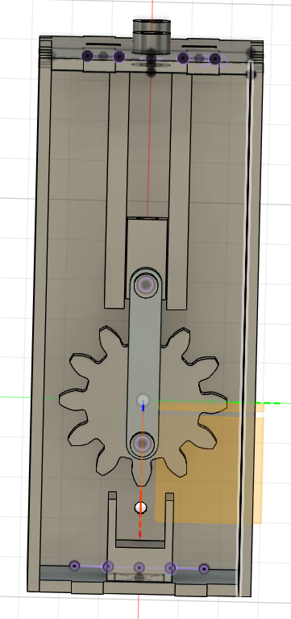
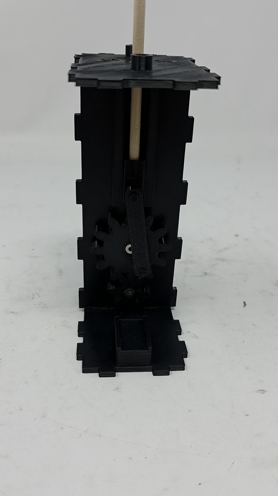
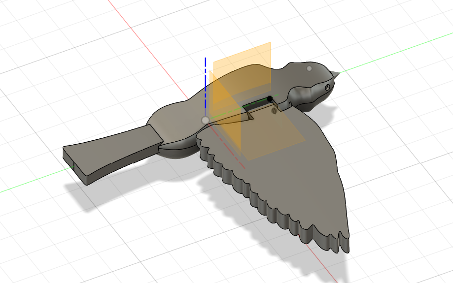
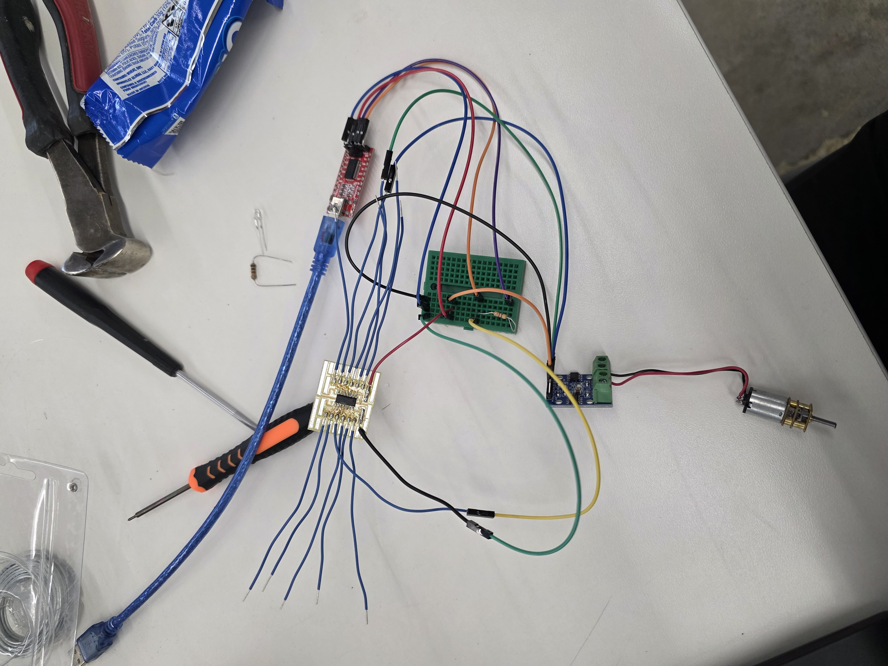

Week 7: Electronic Outputs
Assignment: Minimum Viable Product for Final Project
For my minimum viable product this week, I decided to tackle creating the kinematic bird sculpture that I want to add to the dress while trying to keep all the components as small and compact as possible. To do so, I first modeled and printed out mechanism for moving the bird up and down in order to simulate a flapping motion. Instead of the oval cams idea I had for the kinematic sculpture, I went with a crankshaft idea instead (thanks Bobby for the advice!). This mechanism was much more compact than the oval cam idea and still turned rotational motion into linear motion the way I wanted it to. I also added a small lifter piece to the mechanism in order to make sure that the motor would be able to fit in the right spot and connect with the crankshaft properly. I decided to 3d print all the parts in order to have the maximum flexibility and be able to get every measurement just the way I wanted it. I also used a 5 mm dowel as the central pole to the bird. Here's the model of the mechanism and its enclosure in Fusion, and all printed out and assembled:


Download Final Project ModelI then tested the mechanism manually in order to make sure that the bird would move the way I expected it to - and it did!
Afterwards, I modelled the bird that would go on top of the mechanism. I went through a bunch of iterations with the wings of this bird, testing out different ways to connect the wings to the body. I initially started with wings that would snap into the body of the bird, creating a secure fit, but as I scaled the bird up to be bigger (to make it more obvious on top of the box), I realized that the snap fit idea did not scale well. So I switched over to a wire hinge, where I had a hole through the body and wing of the bird and was able to insert a piece of wire through to connect them and create a hinge. This worked well and allowed the wings to flap freely, and scaled as a made the bird bigger and bigger.

Download Bird ModelIn order to minaturize my design even further, I stopped using the ESP32Xiao as the microcontroller for my circuit and instead opted for the ATTiny1624 instead. I soldered the microcontroller onto a breakout board, learned to program it using the ATTinyMegaCore, and was able to successfully run my motor using it and a L9110 H-bridge motor driver. I also used a N20 motor instead of the yellow dc motors we used during previous weeks, also because they were smaller. Here's a picture of my circuit:

I later added in a button for the motor control too. Putting everything together, I was able to successfully get the bird to flap when I pushed the button in a very satisfying way!